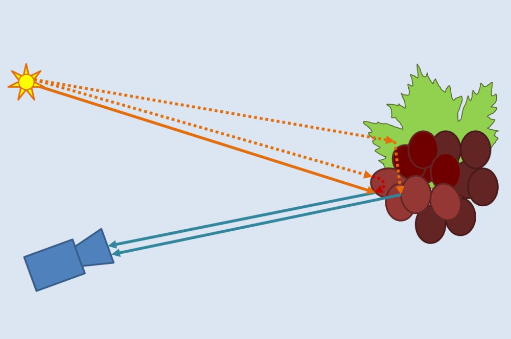

Volker Steinhage: News
| Feb. 1, 2017: Pierre Barré joins the IVS group as techn. staff
|
|  |
Oct. 10, 2016: The Inst. of Computer Science of Bonn Univ. grants funding of a new project on computational sensing with applications to plant breeding for two years.
More details:
Projects of the IVS group
|
| May 25, 2016: Congrats to student member Vincent Casser of our IVS group. His full paper contribution entitled "Using Feedforward Neural Networks for Color Based Grape Detection in Field Images" was awarded with a best paper price at the 3rd Computer Science Conference for University of Bonn Students (CSCUBS 2016). More details: 3rd Computer Science Conference for University of Bonn Students (CSCUBS 2016) |
|
Febr. 3, 2016: The German Research Council (DFG) grants funding of a new project on analysing grape genotypes with respect to cluster architecture for three years.
More details:
Projects of the IVS group
|
| May 3, 2015: Congrats to student member Joel Janai of our IVS group. His master thesis entitled "Tracking of Arbitrary Objects in 3D Laser Range Data" was awarded with a price of the AFCEA Bonn e. V. More details: News of the Computer Science Department of Bonn University |
| Jan. 1, 2015: Jenny Mack joins the IVS group as Ph.D. student
|
| Aug. 1, 2014: Volker Steinhage moved as head of the IVS group to the Institute of Computer Science 4, University of Bonn
|
| Home | News | Teaching | Projects | Publications | Team |